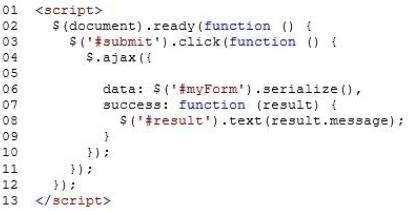
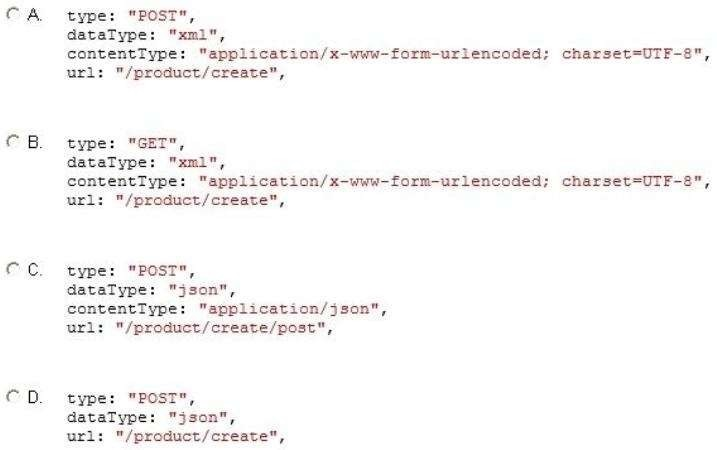

|
You develop a web application by using jQuery. You develop the following jQuery code: (Line numbers
are included for reference only.)

The web application exposes a RESTful web API that has an endpoint of/product/create.
You need to create a new product by using AJAX.Which code segment should you insert at line 05?

A. Option AB. Option B C. Option C D. Option D Correct Answer: D Section: Volume C Explanation Explanation/Reference: Explanation: * url:/product/create This is the endproduct. * datatype: The type of data that you're expecting back from the server. * contentType (default: 'application/x-www-form-urlencoded; charset=UTF-8') Reference: http://api.jquery.com/jQuery.ajax/ ExplicaciónEste ejercicio esta relacionado con la definición, funcionamiento y demás del metodo $.ajax().El método $.ajax()jQuery proporciona otro método para realizar peticiones Ajax al servidor, la diferencia es que este método se puede utilizar para peticiones get o post, y para elegir entre muchas opciones diferentes que vamos a explicar a continuación.Para seleccionar entre las distintas opciones, se utiliza un objeto configurable. El objeto configurable es sólo un objeto de JavaScript con un montón de valores que sirven para configurar las necesidades de nuestra petición Ajax. Podemos imaginarnos un objeto Javascript con varias propiedas. A través de las propiedades podemos especificar un montón de opciones diferentes, lo que hace que el método $.ajax() sea mucho más versátil. El método $.ajax() cuenta con dos sintaxis posibles: $.ajax(url, { objeto-configurable } ); // o $.ajax( { objeto-configurable } ); En la primera sintaxis, se especifica la url a la que enviar la petición Ajax, y luego se pasa el objeto configurable, y en la segunda, se pasa directamente el objeto, que también contendrá la dirección url de la petición. El objeto configurable contendrá uno o varios de los parámetros siguientes:
Respuesta:Lo expuesto anteriormente descarta las opciones A y B ya que el "contenType" definidos en estas opciones está dado por defecto en el metodo. La opción C no puede ser ya que la url del producto tiene que ser "url: '/product/create'" y no "url: '/product/create/post'" ya que el post es el método de enviar. Además GET está dado por defecto y no habría necesidad de definirlo, como es hecho en la opción B. Por otro lado el API no define datos XML o al menos no se especifica en el ejercicio. Por lo tanto la respuesta correcta en la opción D. Fuentes:https://openclassrooms.com/en/courses/4309491-simplifica-tus-proyectos-con-jquery/4981961-el-metodo-ajax https://api.jquery.com/jQuery.ajax/ |